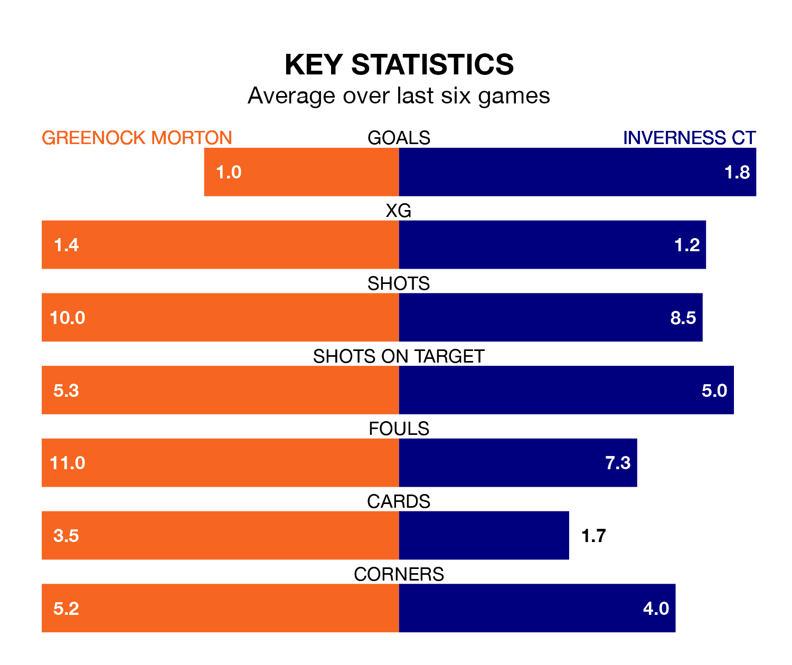

Struggling Greenock Morton face Inverness CT at Cappielow Park on Tuesday looking to build on a win in their last league outing.
After securing all three points with a 2-1 victory over Arbroath on Saturday, the Ton sit bottom of Scottish Championship.
They travel to play an Inverness CT side sixth in the standings, who also won their last match, 4-1 against Queen's Park.
In the last 10 years, Greenock Morton and Inverness CT have played each other on 25 occasions. Greenock Morton won seven of them, Inverness CT 11, and they drew seven times.
On average, the Ton scored 1.2 goals and ICT 1.7 in those matches.
Their last meeting was on April 1, when Inverness CT won 2-1 away.
With 14 goals in 13 games so far this season, Greenock Morton are the league's joint-second-lowest scorers with 1.1 goals per game. And they are conceding more than average, letting in 23 goals at a rate of 1.8 per game.
Inverness CT are also below average scorers, with 1.2 goals per game, compared to a league average of 1.5. They have conceded 1.1 goals per game.
The Ton are in mixed form in Scottish Championship, with two wins and a draw from their last six games.
With three wins and two draws over that period, ICT's form is better – they have taken 11 points from 18, compared to the hosts' seven.
Tuesday's match will be refereed by Lloyd Wilson, who has taken charge of one Scottish Championship game so far this season, issuing no red cards and booking five players. He has not awarded any penalties.
He is yet to oversee a match featuring either Greenock Morton or Inverness CT this season.
